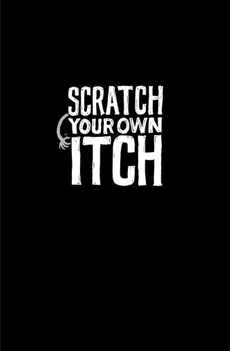

{% include JB/setup %}
{% raw %}
<div>

<h2 id="filepos43708" class="calibre19"><span class="calibre2"><a class="calibre13"></a><strong class="calibre14">Make a dent in the universe</strong></span></h2><div class="calibre4"></div>
<p class="calibre7">To do great work, you need to feel that you're making a difference. That you're putting a meaningful dent in the universe. That you're part of something important.</p>
<p class="calibre17">This doesn't mean you need to find the cure for cancer. It's just that your efforts need to feel valuable. You want your customers to say, "This makes my life better." You want to feel that if you stopped doing what you do, people would notice.</p>
<p class="calibre17">You should feel an urgency about this too. You don't have forever. This is your life's work. Do you want to build just another me-too product or do you want to shake things up? What you do is your legacy. Don't sit around and wait for someone else to make the change you want to see. And don't think it takes a huge team to make that difference either.</p>
<p class="calibre17">Look at Craigslist, which demolished the traditional classified-ad business. With just a few dozen employees, the company generates tens of millions in revenue, has one of the most popular sites on the Internet, and disrupted the entire newspaper business.</p>
<p class="calibre17">The Drudge Report, run by Matt Drudge, is just one simple page on the Web run by one guy. Yet it's had a huge impact on the news industry--television producers, radio talk show hosts and newspaper <a class="calibre16"></a>reporters routinely view it as the go-to place for new stories.<a id="filepos45537" class="calibre16"></a><a href="Rework_split_027.html#filepos76322" class="calibre9"><sup class="calibre20"><span class="calibre6">*</span></sup></a></p>
<p class="calibre17">If you're going to do something, do something that matters. These little guys came out of nowhere and destroyed old models that had been around for decades. You can do the same in your industry.</p>
<p class="calibre3"><a class="calibre16"></a></p><div class="calibre4"></div>
</div>

{% endraw %}

